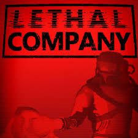

Lethal Company es un videojuego cooperativo de supervivencia con elementos de horror, en el que de uno a cuatro jugadores asumen el rol de empleados contratados por una corporación (la “Compañía”) para viajar a lunas abandonadas, industriales, cosechar chatarra (“scrap”) y venderla antes de que se agote el tiempo o sean atrapados por criaturas hostiles. Cada misión exige cumplir una cuota de ganancias; si el equipo falla, se termina el ciclo y deben reiniciar o aceptar consecuencias más arriesgadas. El juego mezcla presión, cooperación, exploración de entornos peligrosos y humor caótico.
El juego fue desarrollado y publicado por Zeekerss, un desarrollador independiente que llevó el título a través de la plataforma Steam bajo acceso temprano. Utiliza el motor Unity y arrancó el 23 de octubre de 2023 en Windows. El enfoque fue construir una experiencia modular que pudiese expandirse mediante actualizaciones basadas en la retroalimentación de la comunidad.
Lethal Company se encuentra en Early Access, lo que implica que aún está en desarrollo activo con nuevas funciones planeadas. Una versión destacada fue la versión 70 (“The Incubating Update”), publicada el 31 de mayo de 2025, que introdujo una nueva criatura al juego, mejoras al radar, cambios en el vehículo de exploración (“Company Cruiser”) y añadidos cosméticos para la nave. A pesar del éxito viral del juego, el desarrollador ha señalado que está trabajando también en otro proyecto y que el mantenimiento o nuevas expansiones de Lethal Company podrían dilatarse, lo cual ha generado expectación en la comunidad.